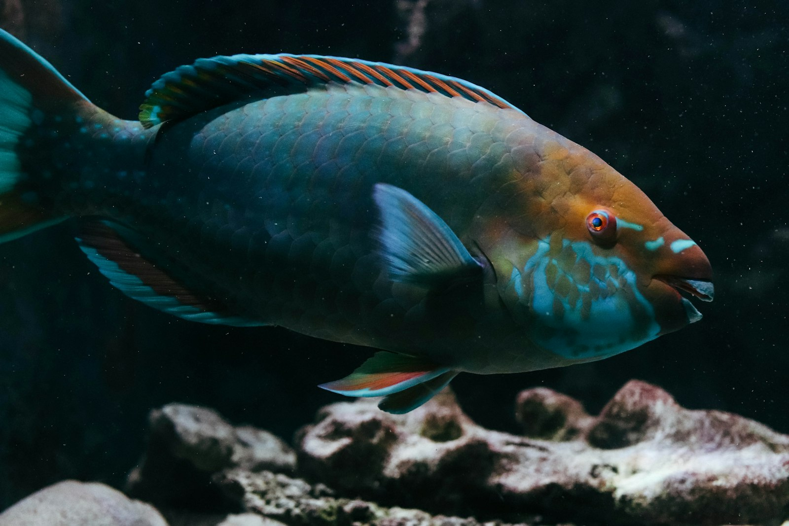
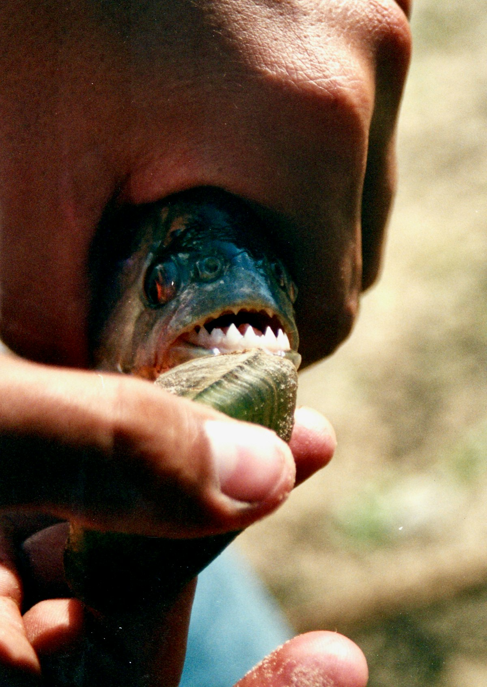
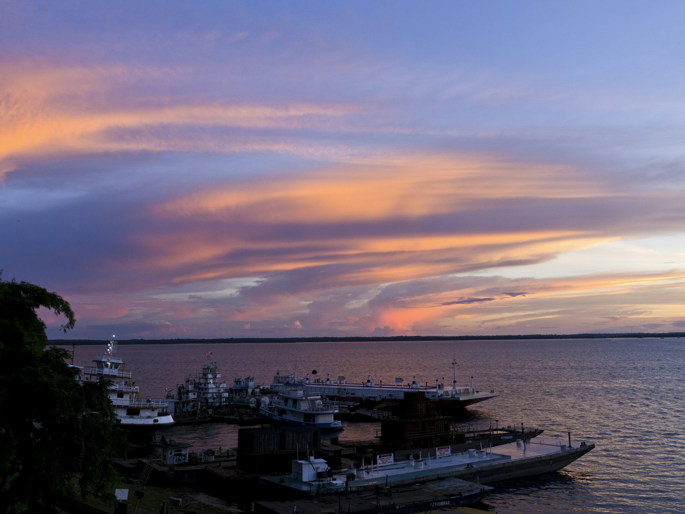

Amazon Field Guide · Wildlife No. 03
Piranha: The Amazon’s Misunderstood River Cleaner
Hollywood painted it as a swimming blender. Real Amazon rivers tell a quieter story: sharp teeth, yes—but also fruit snacks, careful shoals, and a vital clean-up job.

Dip a toe in an Amazon oxbow lake and you might feel a shiver of film-trailer dread. Piranhas have a reputation larger than their bodies. The truth is more interesting—and far less terrifying. Over thirty piranha species live across South America’s rivers. The famous red-bellied piranha (Pygocentrus nattereri) is only one of them, and even that fish spends as much time scavenging and snacking on plants as it does hunting.
Most adults measure 15–30 centimetres; big individuals can reach about 50 centimetres and weigh up to 1.5 kilograms. Their jaws pack a crushing bite for their size, powered by interlocking rows of razor-sharp teeth that grow back when worn. Those teeth are tools for cutting flesh, scales, insects, and fruit—not proof that every splash means danger.
Following the flood
Piranhas thrive in main channels, lakes, flooded forests, and quiet backwaters from Brazil to Peru and Bolivia. They are not long-distance migrants like some ocean fish, yet they track the seasons. When rains raise the river, shoals spread into the forest to feed among submerged trees. In the dry months they pull back into permanent channels where water—and food—still remain.
Young fish often gather in large shoals for safety from river dolphins and caiman. Adults may stay in groups or wander alone, depending on species and risk. Some piranhas even “growl” or “bark” underwater, using sound to warn rivals or signal alarm. Their lateral line—a sensory stripe along the body—picks up vibrations in dark, muddy water where eyes struggle.
“Feeding frenzies are rare. Most days a piranha is an opportunist—fruit one month, carrion the next.”
Villain on screen, cleaner in real life
As predators and scavengers, piranhas help keep smaller fish and crustaceans from booming out of balance. By eating weak or dead animals, they recycle nutrients and reduce the spread of disease through the food web. That dual job—hunter and clean-up crew—makes them a quiet linchpin of Amazon aquatic health.
Attacks on people are spectacularly uncommon. When they happen, they usually involve startled fish, very low water, or sudden food scarcity. Local communities have lived beside these fish for generations. Respect the water, understand the seasons, and the “monster” looks more like a sharp-toothed neighbour with an important day job.
How a piranha meal really works
- Sense the splash. The lateral line detects vibrations in turbid water, guiding the fish toward movement, scent, or a struggling animal.
- Choose what the season offers. Wet months bring fruit, seeds, and insects among flooded trees; dry months push more scavenging and fish meals.
- Slice, don’t linger. Interlocking triangular teeth cut clean chunks. Teeth are replaced as they wear, keeping the “scissors” sharp.
- School for safety, not movie teamwork. Shoals mainly protect against bigger hunters. True frenzy feeding is uncommon and usually targets weak or dead prey.
Five things that make a piranha a survivor
- A powerful bite and replaceable interlocking teeth handle flesh, scales, shells, and tough plant snacks.
- Omnivorous opportunism lets the diet swing with flood and drought instead of locking onto one food.
- Lateral-line senses map prey and danger in water too murky for clear vision.
- Shoaling protects young fish from dolphins, birds, and caiman while adults stay flexible about grouping.
- Acoustic “barks” and growls help settle disputes and warn of trouble without flashing bright colours.

Trouble ahead—and reasons to hope
Piranhas are locally caught for food and bait, and heavy netting near towns can thin shoals and scramble social groups. The aquarium trade harvests wild fish too; escaped pets outside their native range can become invasive problems elsewhere. Fear and folklore still drive needless killing when people blame piranhas for every river accident.
Bigger threats arrive with changing water. Dams, mining pollution, and deforestation alter the seasonal flood pulse that tells fish when to breed and where to feed. Warmer water and messier chemistry stress eggs and fry. Climate shifts that scramble flood calendars hit opportunistic foragers especially hard, because their whole strategy depends on reliable wet-and-dry rhythms.
Hope starts with healthy watersheds: protecting flood cycles, cutting pollution, and fishing sustainably. Education matters too—when communities and visitors learn that piranhas clean rivers more often than they attack swimmers, needless culling drops. Most species are still understudied in conservation plans. Giving them attention means giving Amazon rivers a fairer chance to stay balanced for the next generation of sharp-toothed cleaners.

Odd facts
Word bank
- Omnivore
- — an animal that eats both plant and animal food.
- Scavenger
- — an animal that feeds on dead or leftover material.
- Shoal
- — a group of fish swimming together for safety or feeding.
- Lateral line
- — a sensory system that detects water movement and vibration.
- Flood pulse
- — the seasonal rise and fall of river water that shapes habitats.
- Carrion
- — the flesh of a dead animal used as food.